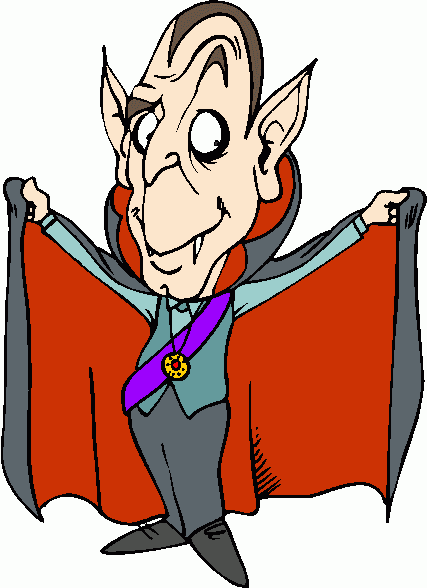

About Vampire

To Quote ...
- An automatic theorem prover for first-order logic
- Implements ordered binary resolution and superposition
- Splitting is controlled by the AVATAR architecture
- Standard redundancy criteria and simplification techniques
- Produces a verifiable proof
History
- 1993 - Implementation I (Paris)
- 1994 - Code trees (Uppsala)
- 1996 - Competing with SETHEO (Munich)
- 1997 - Implementation II (Uppsala-Vienna-Manchester, the Riazanov years)
- 1999 - First win at CASC
- 2002 - The seminal paper
- 2006 - The MSR experience (USA, all alone)
- 2007 - Implementation III (the Hoder years)
- 2009 - Symbol elimination
- 2011 - The birth of AVATAR
- 2014 - Implementation IV (the Reger/Suda years)
Fame and Glory